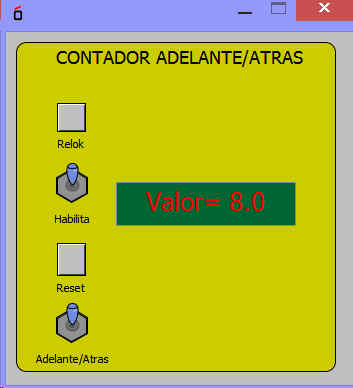

Se trata de un contador que cuenta en formato de numeros enteros.
Las Entradas son:
Takt: reloj de entrada para contar
reset: puesta a "cero"
enable: habilitacion
up/down: permite contar hacua delante o hacia atrás
La salida es count (en ormato int)
